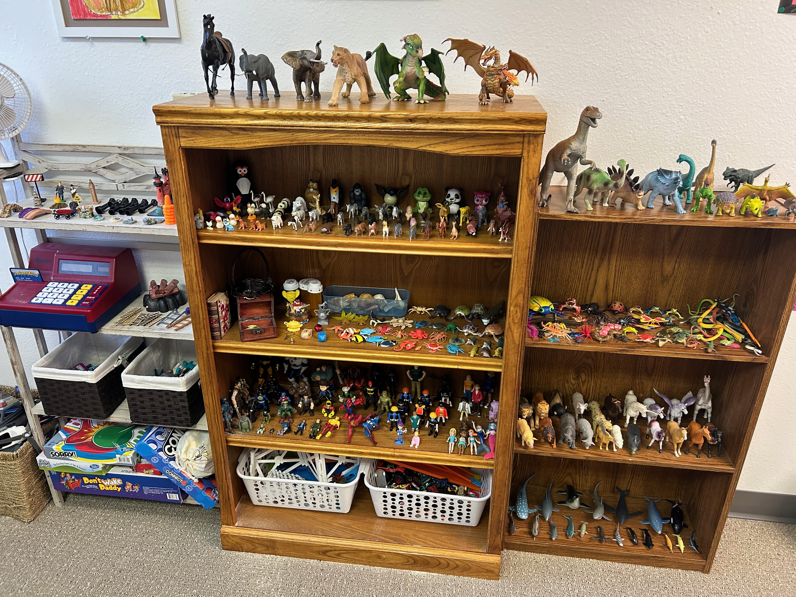
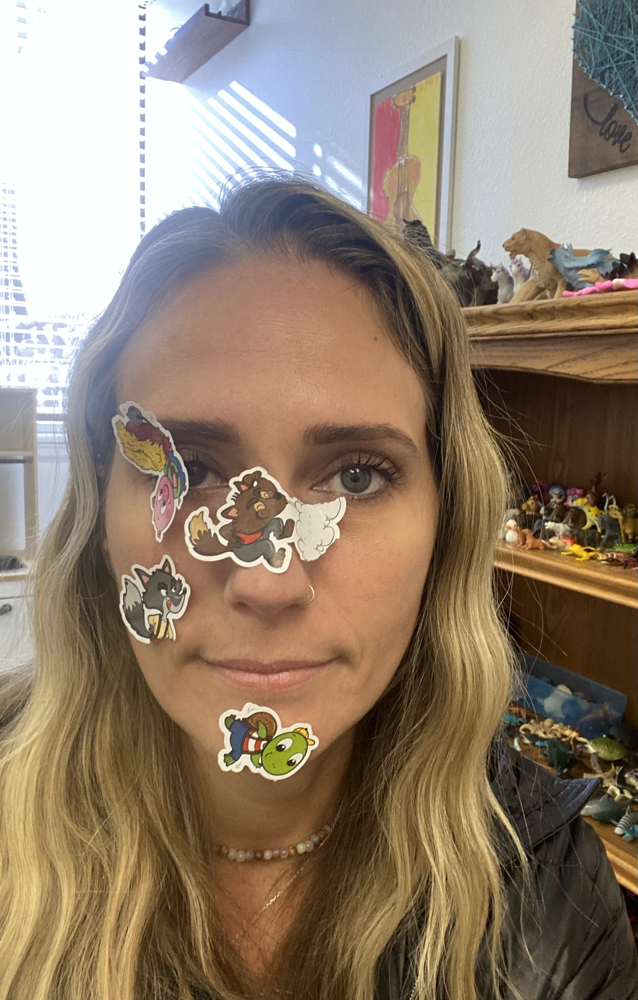

Children don’t always have words. But their play tells a story.
In play therapy, play is not meaningless or a waste of time. It is the child’s primary language. Through play, children express what they cannot yet say directly, work through internal conflict, and begin to make sense of their worlds.
My trainings and presentations help clinicians notice more, slow down more, and trust the therapeutic process more fully, especially when the work asks us to stay with what is emerging rather than rush to interpretation or outcome.

What I offer
I offer keynotes, workshops, and trainings that help therapists deepen their relationship to child-centered practice while refining how they attend to story, symbolism, repetition, and shifts in the playroom.
What makes this different
I’m not interested in steering a child’s play or forcing meaning onto it. I’m interested in helping clinicians refine attention so they can recognize the story that is already trying to become visible.
This approach invites therapists to slow down enough to notice patterns, repetition, tension, and subtle shifts without rushing to tidy conclusions. It centers presence over performance and trusts that meaning unfolds when the story has space to breathe.
The story doesn’t change because we change it. It changes because it has finally been fully seen and held.
Images of the playroom
Play therapy is alive, symbolic, surprising, and often far more expressive than words alone. And sometimes, you get stickers to the face.


Training focus areas
Bring this to your training or clinical community
If you’re looking for a workshop, presentation, or clinical training on Narrative Child-Centered Play Therapy or ideas that help therapists see the playroom with more depth, patience, and clarity, I’d love to talk.